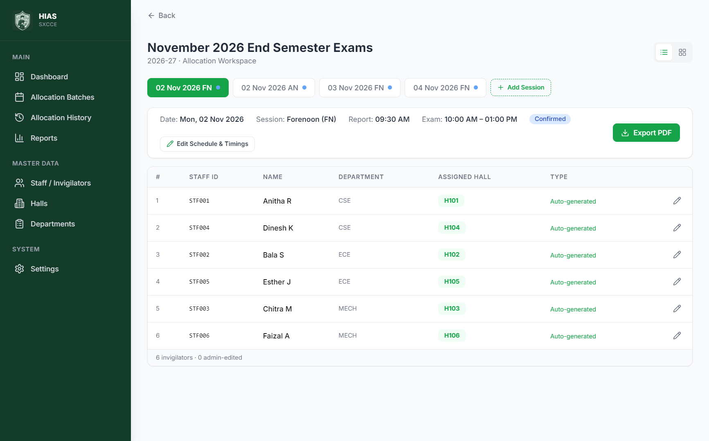
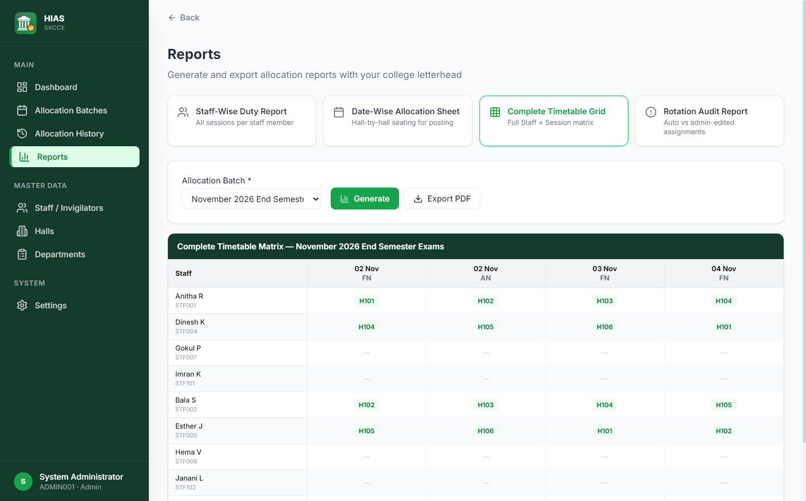
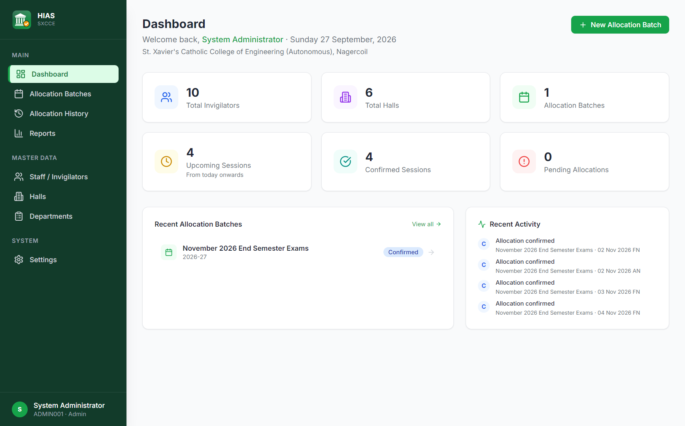

Allocating invigilators to examination halls is a recurring, manual task in every college. Done by hand, it is slow and error-prone: the same person can be sent to the same hall repeatedly while others are not, a hall can be double-booked, and there is no record to check fairness against afterwards.
HIAS (Hall Invigilator Allocation System) is a Windows desktop application that automates this task. For every exam session it assigns each on-duty staff member to a hall using a rotation algorithm that remembers each person's previous halls, validates the result against seven rules, allows controlled manual edits with an audit trail, and produces printable PDF allocation sheets and reports. It runs completely offline with an embedded SQLite database, so it can be installed on any college computer without a server or internet connection.
HIAS is an Electron application with three layers. The user interface never touches the database directly; every operation goes through a narrow, typed IPC bridge to the main process, which owns the business logic and the database file.
contextIsolation on and Node integration off; it can only call the functions the preload bridge exposes.npm run build:web) that stores data in the browser; the desktop application is the supported deployment.| Area | Technology |
|---|---|
| Desktop shell | Electron 32, packaged as a Windows NSIS installer with electron-builder |
| Build tooling | electron-vite (Vite 5), TypeScript 5 (strict mode) |
| User interface | React 18, React Router 6, Tailwind CSS 3, Lucide icons, bundled Inter font |
| State | Zustand |
| Database | SQLite via sql.js (WebAssembly; no native compilation needed) |
| Reports | jsPDF and jspdf-autotable (PDF), SheetJS xlsx (Excel import) |
| Security | bcryptjs password hashing (web build), Electron context isolation |
| Testing | Vitest (unit and integration), scripted end-to-end run of the packaged app |
| Version control | Git and GitHub, collaborative development through pull requests |
The database is a single SQLite file (%APPDATA%\eias\eias.db) with foreign keys and cascading deletes. Schema changes are applied through versioned migrations at start-up.
| Table | Purpose | Key columns |
|---|---|---|
| departments | Academic departments | code (unique), name |
| users | Staff/invigilators and the administrator | staff_id (unique), name, department_id, role, is_active |
| halls | Examination halls | hall_code (unique), name, capacity, block, sort_order, is_active |
| exam_cycles | Allocation batches (exam series) | name, academic_year, status |
| exam_sessions | One FN/AN session on a date | cycle_id, exam_date, session_type, rotation_step, timings, status |
| allocations | Staff-to-hall assignments per session | session_id, user_id, hall_id, generated_hall_id, is_manually_edited, edit_reason; unique per (session, user) and (session, hall) |
| rotation_history | Confirmed assignments over time; the memory used by the rotation | user_id, session_id, hall_id, global_order |
| settings | College profile and default timings | key, value |
| audit_log | Record of key actions (edits, confirmations, rotation restarts, deletions) | action, description, payload, created_at |
| notifications | In-app notices for staff (web build) | user_id, title, message, is_read |
rotation_history.rotation_history, inside a transaction, which moves the rotation forward.Because the rotation history is global rather than per batch, fairness carries over from one exam series to the next. An administrator can reset it deliberately (Restart Rotation), for example at the start of an academic year.
| Rule | Check |
|---|---|
| R1 | No repeated hall: a staff member may not return to a hall used within their last n − 1 confirmed sessions, where n is the pool size (so a full cycle may restart). |
| R2 | A hall has at most one invigilator in a session. |
| R3 | A staff member has at most one hall in a session. |
| R4 | Rotation integrity: a session follows the last confirmed session in step order. |
| R5 | Staff must be active. |
| R6 | Halls must be active. |
| R7 | The number of staff equals the number of halls. |
R1 is enforced strictly with one exception: if an allocation has no more repeats than the proven minimum for the staff and halls of that session, the repeats are shown to the administrator as warnings ("unavoidable repeat") instead of blocking the session. Manual edits are checked against the rules as they are made, and the edit dialog only offers halls that keep the allocation valid.
An earlier version assigned halls one person at a time. Fairness testing showed that this worked perfectly for a fixed team but failed badly when more staff than halls take turns (the normal case in a college): two people competed for the same "next" hall and one was pushed into a recently used hall, so the system rejected its own allocation. With 10 staff sharing 6 halls, only 5 of 60 sessions could be confirmed; with a random duty list of 6 out of 12 staff, 9 of 80. Assigning everyone together as an optimal matching fixed this: all sessions in every tested scenario now confirm.
72 automated tests (Vitest) run against an in-memory database and all pass. They cover:
Each scenario generates and confirms every session in turn and checks that no hall or person is double-booked. "Hall spread" is, for the worst-off person, the difference between the hall they had most often and least often.
| Scenario | Sessions confirmed | Unavoidable repeats | Same hall twice in a row | Hall spread |
|---|---|---|---|---|
| Fixed team: 6 staff, 6 halls (also 2, 3, 5 and 9) | 36 / 36 | 0 | 0 | 0 (every hall exactly 6 times) |
| 10 staff taking turns in 6 halls | 60 / 60 | 0 | 0 | 0 |
| Random duty list: 6 of 12 staff each session | 120 / 120 | 162 of 720 duties | 0 | 3 |
| Random duty list: 8 of 15 staff (3 runs) | 240 / 240 | 402 of 1,920 | 1 | 2 |
| New staff join half-way | 24 / 24 | 0 | 0 | 0 |
| A hall closes for 10 sessions and reopens | 28 / 28 | 15 | 0 | 2 |
| Manual swap by the administrator | 12 / 12 | 0 | 0 | 0 |
| Rotation continues across two batches | 12 / 12 | 0 | 0 | 0 |
| Restart rotation part-way | 16 / 16 | 0 | 0 | 0 |
| Same team morning and afternoon every day | 20 / 20 | 0 | 0 | 0 |
| Large college: 30 of 60 staff, 30 halls | 60 / 60 | 24 of 1,800 | 0 | 2 (15 ms per session) |
With a stable team, or staff taking turns in order, the rotation is perfect. With a random duty list every session still confirms, but some repeats are unavoidable; they are kept to the proven minimum and the hall counts of each person stay within 2–3 of each other. How many duties each person gets depends on who the administrator puts on duty, which the engine does not choose.
TypeScript runs in strict mode and the whole code base type-checks without errors (npm run typecheck).
The packaged Windows application was driven automatically against a separate test data folder with sample data (3 departments, 6 halls, 8 staff, one batch of 4 sessions). The run checked:
| Check | Result |
|---|---|
| Generate and confirm four sessions | Passed, 0 rule violations |
| 30 sessions with 10 staff taking turns in 6 halls; 20 sessions with random duty lists | All 50 confirmed |
| Batch status moves from Draft to Confirmed | Passed |
| Excel import with two valid and two invalid rows | 2 imported, 2 reported with reasons |
| Delete a batch; database backup | Passed |
| All screens load without errors | Passed |
| Session PDF and all four report PDFs | All valid PDFs, content checked |
| Network access while running | None (fully offline) |
This run found and fixed several defects before release, including an allocation engine that rejected its own allocations when staff took turns, empty staff-wise reports, a dashboard counter that was never calculated, batches that never left the Draft state, the order of sessions in the timetable, and a restore that could be undone by further use before a restart.



All names shown are sample data used for testing.
HIAS replaces a slow, manual and error-prone process with a reliable tool: an entire session is allocated in one click, fairness is enforced by a rotation that remembers every confirmed duty, mistakes are caught by automatic rule checks before anything is finalised, and every change is recorded. Delivered as an offline Windows application with printable reports, backup and a user guide, it is ready to be used by the examination cell.